RandomLasers
Masters project modelling random lasers
Shortcuts
29 January
1 February
2 February
3 February
5 February
8 February
10 February
14 February
19 February
21 February
24 February
26 February
28 February
3 March
5 March
8 March
8 March
- No progress with the non-square geometry.
- Looked at the gain profiles through the centre of the slab, after the pump pulse has ended (at t = 30 ns). Figures 21 and 22 shows the gain profile at different lengths for an incident pulse below threshold (4x109 Wm-2) and above threshold (4x1010 Wm-2) respectively.
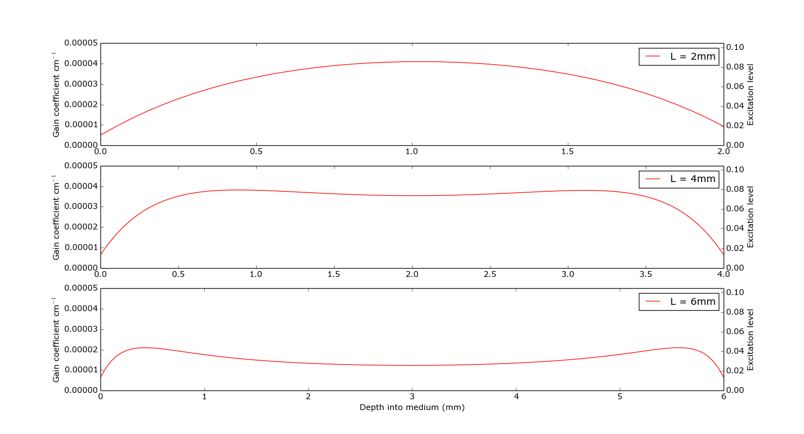
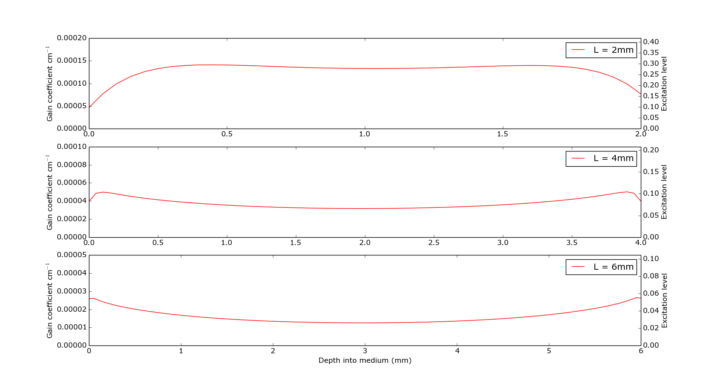 - The small extinction coefficient means that plots look more similar to the double sided pump from the Lagendijk paper, this is a result of the gain in the centre of the medium being depleted faster due to the higher excitation level.
It may be worth comparing one of these plots with a similar one with a higher extinction coefficient to show how it affects the gain profile
5 March
- Using the Crank-Nicolson method whilst varying the geometry seems to be very difficult. The stems from the need for the A matrix to contain differnt N_pop values for each column of the W matrix, which isn't mathematically possible without defining a new A matrix for each column. This take a stupid amount of time.
- An alternative might be to create a matrix for Nt and set outer rows of this to 0 in order to change the effective geometry of the sample. Updates incoming.
-
Update: Progress was made by restricting Nt and modifying the matrices on the RHS and LHS to include zeros in the upper and lower corners when calculating the x derivatives. The idea was that this would restrict gain in these areas. This was successful but the resulting animations show an unusual squareness to the excitation level and energy densities (see here and here respectively) that scaled with the width of the available gain.
Why the atoms near the x = 0 and x = L boundaries are not excitated I do not know.
- An alternative method that would deal with the issue in the first bullet point of this update would involve remapping the matrix each to a column vector.
This would require different remappings when calculating x and y derivatives but functions have been written that achieve this (M is the original matrix).
X = M.reshape(M.shape[0]*M.shape[1],1)
Y = M.T.reshape(M.shape[0]*M.shape[1],1)
def ytox(V):
return V.reshape(M.shape[1],M.shape[0]).T.reshape(M.shape[0]*M.shape[1],1)
def xtoy(V):
return V.reshape(M.shape[0],M.shape[1]).T.reshape(M.shape[0]*M.shape[1],1)Thus, using this method, a large matrix could be constructed with the correct elements that would allow the system to be solved. In theory.
3 March
- Code updated to correctly calculate 2D diffusion. The transpositions are now done in the correct places, so in the first half step the y derivative is kept constant, and in the second half step the x derivative is kept constant. This doesn't actually change the results at all.
- An animation showing the time evolution for the excitation level over 500 ns can be found here. The purpose of this is to show that the population decays with the natural lifetime after lasing action has ended.
- Things to do next:
- Gut the probe from the code. It isn't used and probably won't be.
- Make the 2D geometry variable (i.e. rectangular not just square)
- Doing this with the current matrix methods may be trickier. The system won't be tridiagonal as such. It may be easier to allocate the right hand side as a vector operation.
28 February
- The 2D system has been correct to ensure the pump pulse is only applied along the x-axis. This was done by making the I_G and I_R functions return matrices that were then transposed when all the other matrices were. This appears to have made no change to the original Figure 17 (the one below has been updated anyway).
- Animations showing how the 2D system evolves have been created:


26 February
- Further corrections made to the 1D CN code, mostly involved with the probe pulse so this hasn't changed any of the figures yet.
- The 2D system code has been written and appears to work successfully. Figure 16 shown below shows the back scattered flux at the x=0 interface from a pump pulse of intensity 4x1010 Wm-2 and a thickness of 2 mm. Note that thickness of 1 mm do not seem to allow for laser action even with extremely large pump intensities (~1016 Wm-2)

- A mega plot similar to the 1D one has been plotted, for L = 2, 3, 4 mm. See Figure 17 below:

- Note how a lower pump pulse intensity results in higher output intensities than the 1D system. This is due to the plotted flux being the sum of the outgoing flux at each point along the interface.
- In it's current state, a 2 mm thick sample takes 5.5 minutes to run, a 4 mm thick sample takes almost 13 minutes. Some optimization is clearly needed. Using multiprocessing to run the W_'X'_next calculations simultaneously seems to actual slows things down.
- To do over the weekend: See if its possible to plot the energy density at each spatial grid point, and animiate it to show the evolution over time. Do this for 3 mm, 2x1010 Wm-2, since it'll probably give the clearest peaks. Will need to regenerate the data, use this to save the data.


24 February
- Some corrections were made to the 1D CN code, and the code to include and implement the probe pulse was added in, but hasn't been used. The graphs from 21 February have been updated accordingly.
- The theory behind solving a 2 dimensional set of equations has been looked into. See section 20.3.2 of Numerical Methods (3rd edition).
- We can solve the 2 dimensional equations in a similar way to the tridiagonal matrix equation we get in 1 dimension. The difference is that we have 2 equations and we move in half steps, alternating between solving the x-derivatives and the y-derivatives.
21 February
- Crank-Nicolson method has been implemented. Still slightly unsure of boundary conditions, but the results seem to be as expected.
- Since CN is always stable, we can reduce the number of time steps. However since some parameters are multiplied by the time step, this changes the results. See Figure 13 below:

- We can also show how the pump intensity affects the outgoing flux. See Figure 14 below:

- And to finish off, a big plot showing how thickness and pump intensity affect the flux and excitation level. The plot in the bottom left corner has a thickness of 1 mm and a pump intensity of 4x1010 Wm-2.
Going right along the plots, the thickness increases in 1 mm steps.
Going up along the plots, the pump intensity doubles.


19 February
- The PDEs were made dimensionless by introducing introducing dimensionless variables. Variables were made dimensionless by dividing by the largest value with the dimension.
- These were discretized and implemented in code using the forward Euler method. Crank-Nicolson has not been attmepted yet (it will be).
- The extinction coefficent has been changed from 2x104 to 2x10-4, which gives more reasonable results (this needs confirming/referencing).
- Figure 11 shows the flux obtained with 100 um mean free path and 1 mm thickness. The only every 500th data point was saved.
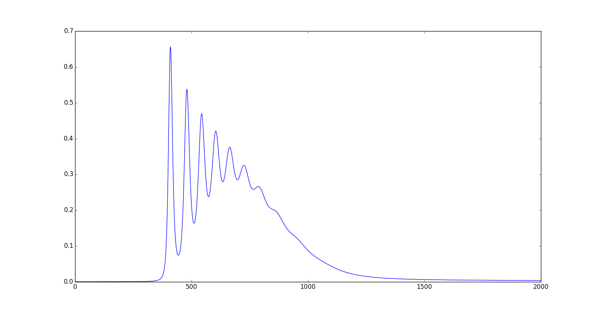
- Now in 3D!
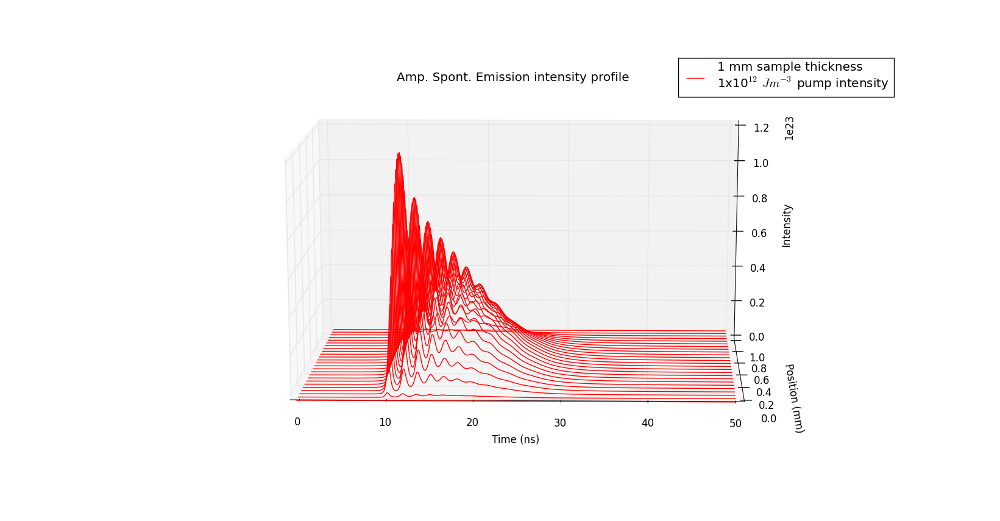
14 February
- Yay for working on valentines day!
- Code does not do what it's meant to. Attempted to implement Crank-Nicolson again but it's just as crap as before. Cannot get the system to lase.
- We have an example fortran code written using CN method and in 3 dimensions. It mostly makes sense, however there are a lot extra multiplying factors I don't yet understand the purpose of.
- Giving up with life.
10 February
- The values of IG0 and IR0 in the intensity functions should be in terms of photon count, rather than energy units. This also means that the energy densities are actually photon densities (so the 4 coupled equations now have consistant units).
- It look like Lagendijk uses Ke of 1x104, judging by the results of the gain coefficient as a function of depth into the material. Fig 8 shows how the gain coefficient varies as a function of depth. This is after the pump pulse has ended (set as 1 pulsewidth after the peak of the pulse).

- Fig 8 matches has the correct shape.
- for the single sided pump, the gain coefficient decays rapidly into the medium.
- for the double sided pump, the gain coefficent is roughly uniform. It does dip in the centre (slightly).
- for the single sided pump, the gain coefficient decays rapidly into the medium.
- The 3D plots below have been recreated with the corrected intensities. This changes the shape of them quite a bit. Shown below are Fig 9 (single sided pump intensity) and Fig 10 (double sided pump intensity).
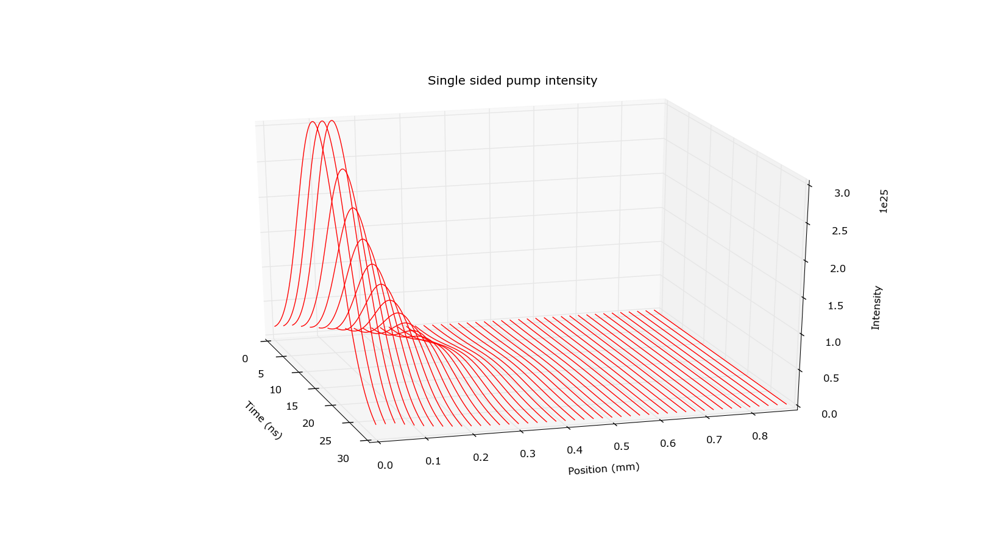 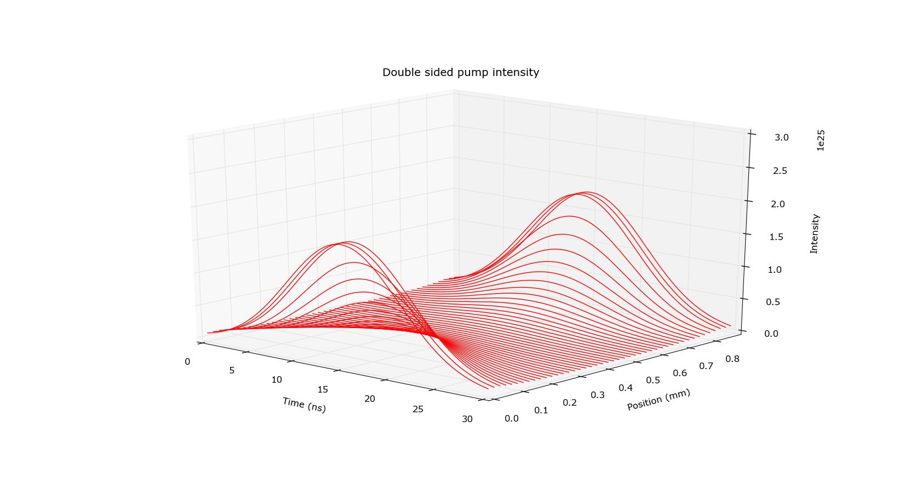

8 February
- Sparse matrices make a significant difference when the B matrix is large, so the create_B_matrix function has been modified to use sparse matrices (csr) if the are more the 100 position elements. When the matrix is small, they actually slow things down. See Figure 7.
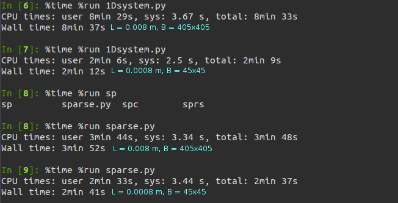
- Figure 6 can also be found on plotly here. This allows for some interactivity, but it is a major pain in the arse to set up.
5 February
- Major correction to the numerical integration method. The space steps need to be smaller than the transport mean free path, which means the time steps get even smaller. The code has been modified to save less data than before since we don't need (1e6 x 45) data points per variable to plot graphs.
- The amplified spontaneous emmission response seems to be only decaying with a lifetime given by tau_e (as one would expect). We are expecting to see some peaks in the time evolution when we vary certain parameters, but we haven't observed this.
- 3D graphs! As examples, Fig 5 shows pump energy density, Fig 6 shows pump intensity.
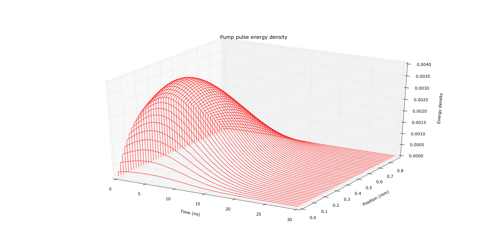
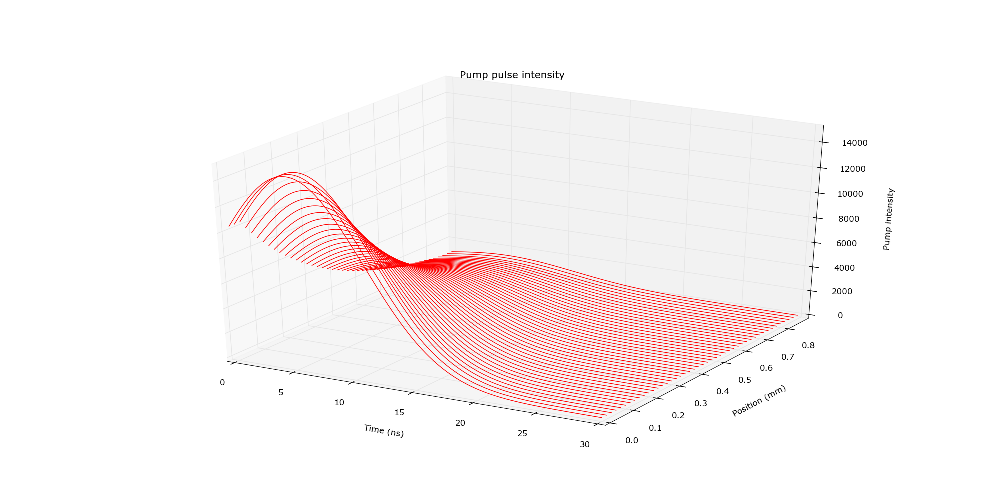
3 February
- Crank-Nicolson implementation seems to be unstable and barfs after around 140 steps (see Fig 1). 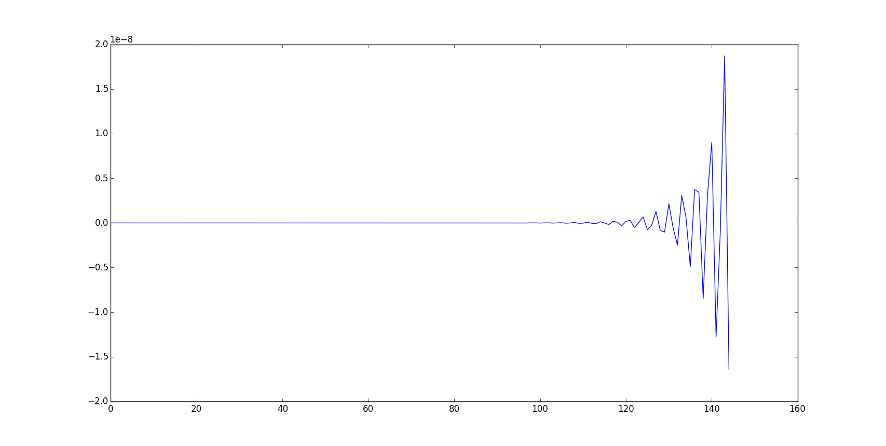
- Using the method Lagendijk used in his paper (Physical Review E, 1996), we get much more sensible results.
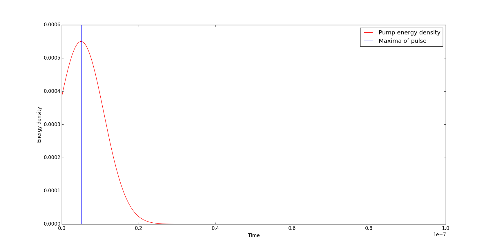
In this Figure 2, the vertical blue line is where the maxima of the pump (and probe) pulse occur.
Figure 3 (below), shows how N_1 evolves. 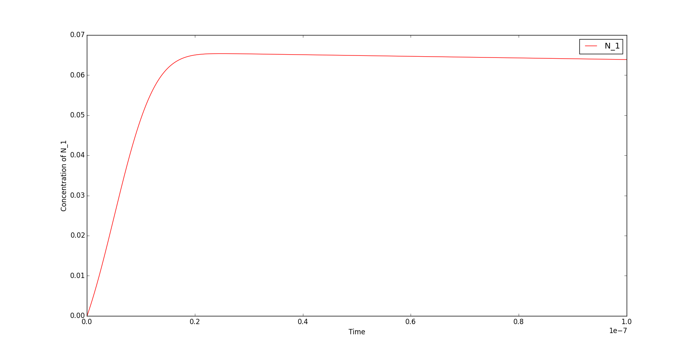
(Note: all times are in seconds)
Figures 2 and 3 follow the same shape as similar figures in Lagendijk's paper, as does the graph for the probe (not shown). The graph for the amplified spontaneous emmission is a bit funky, it may be that it decays over a much longer time.
- Using @jit in numba doesn't speed things up at all in it's current state. Other optimizations applied that massively increase speed (For 100,000 iterations, netbook down from 14 mins to 40 seconds).
- 10 microsecond calculation run. Only the data for W_A and N_1 were saved (graphs only, see Figure 4, since 10 million iterations is 1gb file size). Expected exponential decay observed. Woop!.
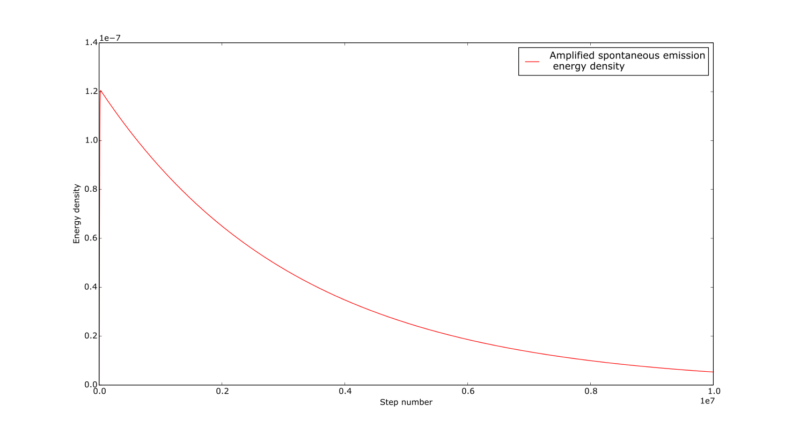
2 February
- Need to identify the dominant terms in the equations and find out why the calculation runs away.
- Numbapro academic license obtained from continuum.io so optimisation using @jit decorator can be implemented at some point.
1 February
Update
- Boundary conditions fixed, makes no difference at this time.
- IPython notebook examples makes sense, suspect problem with parameters of our calcalation.
- Lagendijk finite difference method isn't Crank Nicolson since the 2nd order space dereivate is independent of time. It maybe be worth looking at implementing their method on Tuesday (it would highlight any problems with my code.)
- Boost and lapack are installed (on laptop and netbook). It's going to be a faff to translate the python code into C++.
29 January
Thoughts for before Tuesday
- Go through IPython notebook example fully
- Use finite difference method as detailed in paper by Wiersma & Lagendijk
- Look into doing this in C++: Boost library, lapack etc.
- Fix boundary conditions